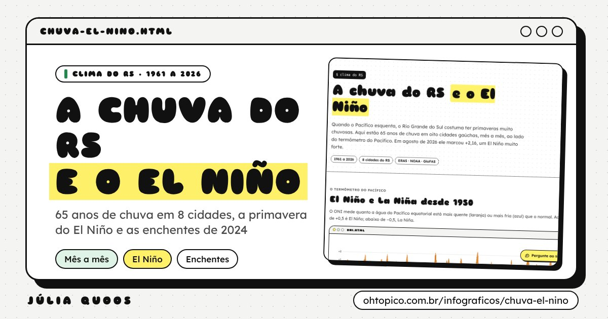
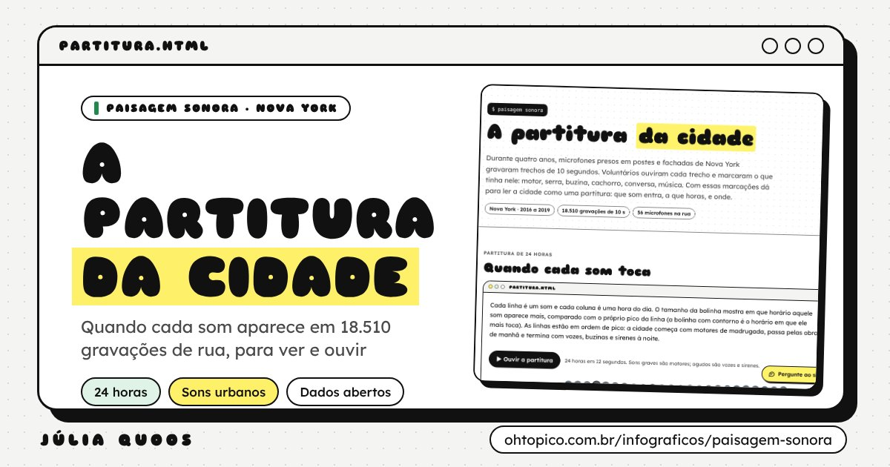
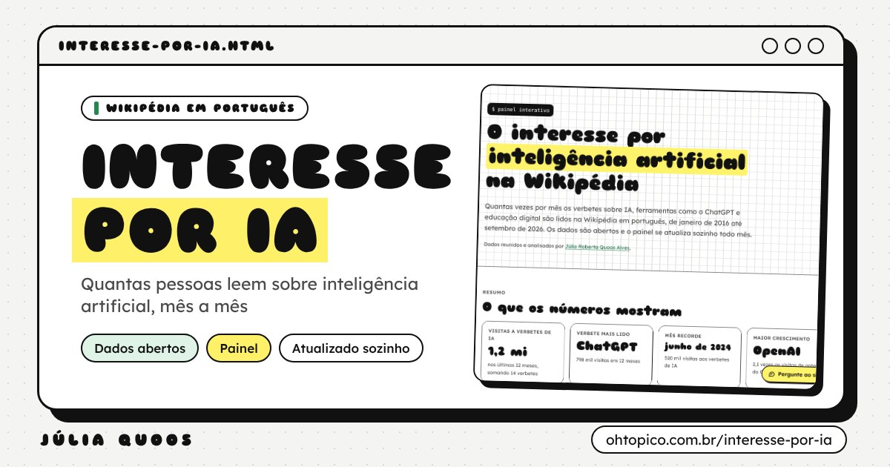

$ infográficos interativos
Dados para explorar
Painéis e infográficos feitos com dados abertos. Dá para clicar, comparar, filtrar e, em um deles, ouvir. Cada página explica de onde vêm os números e traz os dados para baixar.
Censo
Educação e Censo no Vale do Rio Pardo
Censo Escolar (INEP) e Censo Demográfico (IBGE) de 2010 a 2025, para 21 municípios da região de Santa Cruz do Sul, Candelária e Novo Cabrais.
Cidade e cultura
Outros dados

A chuva do RS e o El Niño
65 anos de chuva em 8 cidades gaúchas, a primavera do El Niño e as enchentes de 2024.

A partitura da cidade
Os sons de Nova York ao longo do dia, em 18.510 gravações de rua. Tem uma partitura de 24 horas para ouvir.

Interesse por IA na Wikipédia
Quantas pessoas leem sobre inteligência artificial na Wikipédia em português, mês a mês.